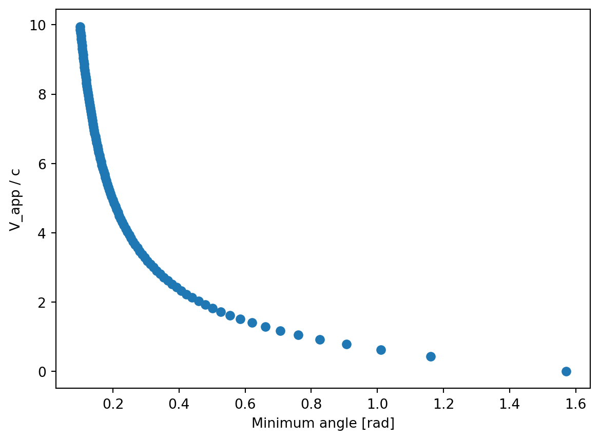

That the smallest possible value for v/c for the source is \(\frac{v_{min}}{c} = \sqrt{\frac{\frac{v_{app}^2}{c^2}}{1 + \frac{v_{app}^2}{c^2}}}\)
The smallest possible v/c will occur at an angle \(\phi_{min}\) such that \(\cot\phi_{min} = \frac{v_{app}}{c}\)
The Lorentz factor corresponding to the minimum v/c is \(\gamma_{min} = \frac{1}{\sqrt{1 - \frac{v_{min}^2}{c^2}}} = \sqrt{1 + v_{app}^2/c^2} = \frac{1}{\sin\phi_{min}}\)
The inner 6” of the jet from M87 is observed to have an apparent velocity of 4.5c https://ui.adsabs.harvard.edu/abs/2013ApJ…774L..21M/abstract. Using your newly derived equations, estimate the minimum velocity, minimum approaching angle, and Lorentz factor of the jet.
Plot \(\frac{\beta_{app}}{c}\) vs \(\phi\) for a variety of Lorentz factors at the source. Summarize your results to describe how superluminal motion depends on the properties of the source and relative position of the observer.
Answer: Using the equations provided, we can create a simple Python script to calculate the minimum velocity, minimum approaching angle, and Lorentz factor of the jet.
import astropy.units as uimport astropy.constants as cimport numpy as npimport matplotlib.pyplot as pltv_app =4.5* c.cv_min = np.sqrt((v_app / c.c) **2/ (1+ (v_app/c.c) **2))cot_theta_min = v_app / c.ctheta_min = np.arctan(1/ cot_theta_min)gamma_min =1/ np.sin(theta_min)print(f"v_min / c: {v_min:.2f}")print(f"theta_min: {theta_min.to(u.deg):.2f}")print(f"Lorentz factor: {gamma_min:.2f}")
Below is a plot of \(\frac{\beta_{app}}{c}\) vs \(\phi\) for a variety of Lorentz factors.
l = np.linspace(1, 10, 101)t_min = np.arcsin(1/l)beta =1/np.tan(t_min)plt.scatter(y = beta, x = t_min)plt.xlabel("Minimum angle [rad]")plt.ylabel("V_app / c")plt.show()

From this plot, as the angle approaches zero, indicating a jet directed along the line of site, \(\beta\) approaches infinity. Conversely, as the angle increases, indicating a velocity that is entirely in the perpendicular direction, \(\beta\) approaches zero. Thus, the magnitude of the superluminal motion depends primarily on the inclination angle at which an object is observed, assuming, of course, the object has produced sufficiently rapid motion already.
Problem 2
An astronaut travels on a spaceship to a distant stellar system with a constant velocity at 85% the speed of light.
A radio signal is sent from Earth to the spaceship every 4 months (as measured by a clock on Earth). What is the interval between reception of two signals on the ship?
A return signal is sent from the ship to the Earth every 4 months (as measured by a clock on the ship). What is the interval between reception of two signals on Earth?
If the wavelength of the electromagnetic waves sent from Earth is 17 cm, what wavelength must the receivers on the spaceship must be tuned to receive the waves?
Answer: Problems a) and b) are essentially asking the same question: if an object is moving at relativistic speeds to a stationary observer, how will the interval in reception be affected in the stationary frame of reference. In both cases, we can use the time dilation formula.
From a stationary frame of reference, moving clocks run slow. Thus, in both a) and b), we would expect the interval between receivers to be longer than 4 months. This is a similar argument to the Muon example in the textbook: in the muon’s stationary perspective, it has a short life, but to an external, stationary observer, the muon is moving at relativistic speeds and so the time it is alive is dilated, making the observer measure a longer time than the muon. In our case, the spaceship/earth are moving away from their respective stationary reference frames at relativistic speeds, but each party has agreed to transmit at a specific rate of 1 message every four months. Unfortunately, each receiver experiences the delay in messages as taking longer than 4 months due to the relativistic speeds each transmitter is moving at.
Additionally, the spaceship must tune their frequencies to a different wavelenth due to the relativistic motion of the transmitters. The relationship between observed and rest frequency is the following \[\nu_{obs} = \nu_{rest} \sqrt{\frac{1-v/c}{1+v/c}}\]
Note that the conversion between wavelenth and frequency can be found using the simple relationship \[c = \lambda \nu.\]
Below is code that calculates the results described above.
# time dilationv =0.85* c.ct_p =4gamma =1/np.sqrt(1- (v/c.c) **2)t =4* gamma# redshiftl_rest =17* u.cmf_rest = c.c / l_restf_obs = f_rest * np.sqrt((1- v/c.c) / (1+ v/c.c))l_obs = c.c / f_obsprint(f"Interval between reception of two signals on the ship: {t:.2f} months")print(f"Interval between reception of two signals on Earth: {t:.2f} months")print(f"Wavelength ship receivers tuned to: {l_obs:.2f}")
Interval between reception of two signals on the ship: 7.59 months
Interval between reception of two signals on Earth: 7.59 months
Wavelength ship receivers tuned to: 59.70 cm
Problem 3
Barnard’s star, named after American astronomer Edward E. Barnard (1857-1923), is an orange star in the constellation Ophiuchus. It has the largest proper motion (\(\mu=10.3577\)” yr\(^{-1}\)) and the fourth-largest parallax (p = 0.54901”). In the spectrum of Barnard’s star, the H\(\alpha\) absorption line is observed to have a wavelength of 656.034 nm when measured from the ground.
Determine the radial velocity of Barnard’s star.
Determine the transverse velocity of Barnard’s star.
Calculate the speed of Barnard’s star through space.
Consider that the Sun orbits the Milky Way at ~220 km/s, is Barnard’s star traveling particularly fast?
Answer: If we calculate the redshift \[z = \frac{\lambda_{obs} - \lambda_{rest}}{\lambda_{rest}}\] of the H\(\alpha\) absorption line, we can use the following relationship to determine the radial velocity. \[\frac{v_r}{c} = \frac{(z+1)^2 - 1}{(z+1)^2 + 1}\]
For the transverse velocity, we need to multiply the proper motion and the distance to the target (which can be found via parallax), by a conversion factor of 4.74 to convert to units of km/s. \[v_t = 4.74\mu r\] Adding the radial and transverse velocities in quadrature results in the total velocity of the star. \[v = \sqrt{v_r^2 + v_t^2}\] Below is a Python script to perfom the above calculations.
radial velocity: -112.85 km / s
transverse velocity: 89.43 km / s
velocity: 143.99 km / s
Note that the speed of Bernard’s star is less than that of the Sun with respect to the Milky Way, so the final speed is not particularly fast.
Problem 4
A white dwarf is a very dense star, with its ions and electrons packed extremely close together. Each electron may be considered to be located within a region of size \(\Delta x\sim1.5\times10^{-12}\) m.
Use Heisenberg’s uncertainty principle to estimate the minimum speed of the electron.
Do you think that the effects of relativity will be important for these stars?
Again, using the ADS and/or ArXiV search engine tools, identify a recent (within the past few years) peer-reviewed scholarly manuscript that deals with white dwarf stars. Provide a brief summary of the main results of the paper, including a discussion of how the material connects to the concepts that we discussed in Chapter 5 of the textbook.
Answer: Rearranging the Heisenberg uncertainty principle to solve for the velocity \[\Delta v = \frac{\hbar}{2 m_e \Delta x}\] allows us to find the minimum velocity an electron must travel at given we know it’s location with a given uncertainty.
A simple Python script below performs the above calculations.
minimum speed of electron: 3.86e+07 m / s
v / c = 0.13
Note that the speed is just over 10% the speed of light, which is much greater than normal, everyday speeds we are used to. Given this, I would say relativistic effects would be just starting to have a noticable effect.
Sometimes white dwarfs collide, and when they do, they could: 1) trigger a supernova, 2) create a neutron star, or 3) merge into a single white dwarf. The latter was the topic of this paper, in particular, this team modeled the stellar wind that is created by the fast spinning and strong magnetic fields and carries mass away from the star. This team found that the wind is fastest and most luminous near the star’s equator and blows with an inconsistancy: some of the gas gets trapped in the magnetic field and subsequently ejected with the rearranging of the magnetic field lines. This is related to Chapter 5 in our textbook primarily with the fact that white dwarfs are found via spectroscopic (and photometric) methods, however, observationally, winds of a neutron star are measured via spectroscopy.